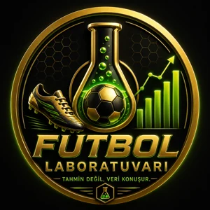
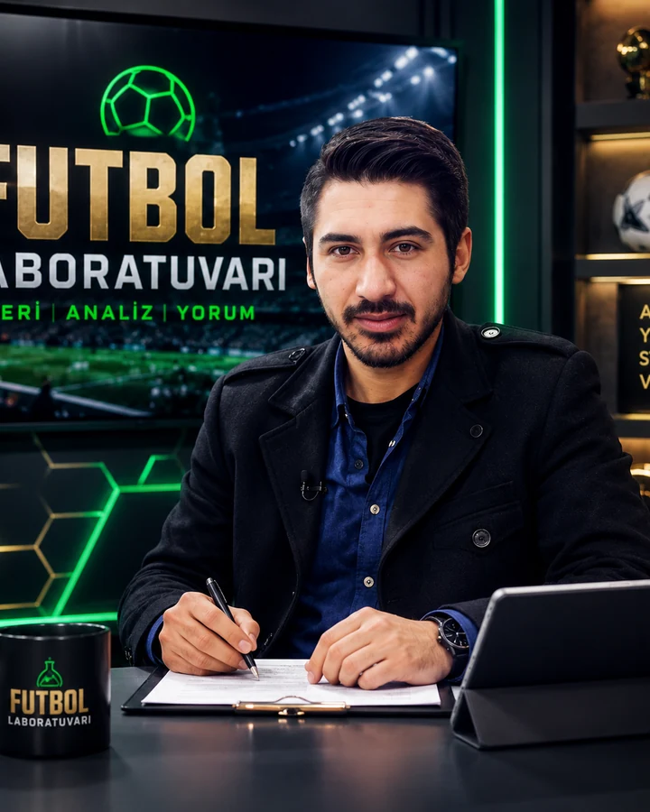
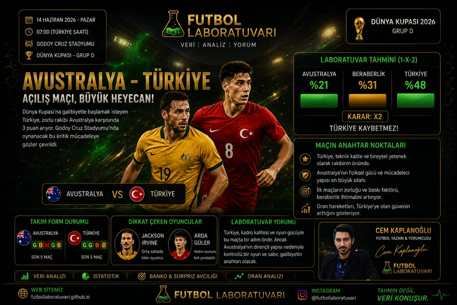
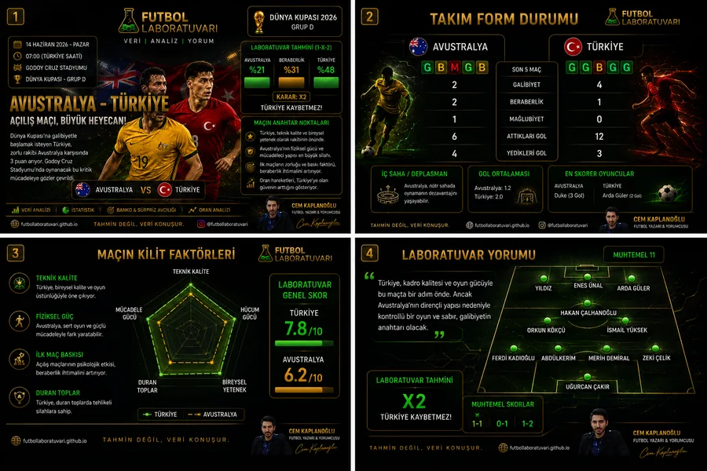

Form Durumu
Takımların son maçlardaki gidişatı, gol üretimi ve savunma dengesi.

Futbol LaboratuvarıMaç ve Kupon MerkeziProfesyonel spor kupon ve maç analizi merkezi
Günün maçları, güçlü tahminler, güven seviyesi ve kupon önerileri tek ekranda sade ve anlaşılır şekilde sunulur.
Premium Kupon Merkezi
Tekli, 2'li ve 3'lü kupon seçenekleri günün maçlarına göre ayrı ayrı listelenir.
Bu sayfadaki içerikler maç yorumu ve kişisel değerlendirmedir; kesin sonuç garantisi vermez.
Günün Seçimi
Maç Yorumları
Her maç; form, kadro, oran hareketi, risk ve maç hikayesiyle birlikte okunur.
Spor Toto
Banko, beraberlik adayı ve sürpriz adayları maç bazlı oran ve yüzde verisiyle değerlendirilir.
Başarılar
| Tarih | Maç | Tahmin | Oran | Skor | Güven | Sonuç |
|---|
Performans
Maç Kayıtları
Geçmiş değerlendirmeler, tahminler ve sonuçlar düzenli bir kayıt alanında tutulur.
| Tarih | Lig | Maç | Yorum Türü | Tahmin | Oran | Güven | Skor Tahmini | Gerçek Skor | Sonuç |
|---|
Yorum Köşesi
Maç önü senaryolar, oran davranışı, kadro dengesi ve psikolojik eşikler tek çatı altında yorumlanır.
Nasıl Değerlendiriyoruz?
Takımların son maçlardaki gidişatı, gol üretimi ve savunma dengesi.
Eksikler, rotasyon, takım derinliği ve oyuncu dengesi.
Maç öncesi oran değişimleri ve risk-ödül dengesi.
Takımların sahaya nasıl çıkabileceği ve maç içi hamle ihtimali.
Son dakikalardaki gol bulma, gol yeme ve baskı tepkisi.
Geriye düşme tepkisi, deplasman baskısı ve motivasyon.
Tüm başlıkların birlikte değerlendirilmesiyle tahmin güveni oluşur.
Hakkımızda
Spor Yazarı ve Futbol Yorumcusu
Futbol Laboratuvarı; maçları sadece skor olarak değil, form, kadro, oran, saha içi denge ve maç hikayesiyle birlikte okumayı hedefler.

Galeri
Logo, sosyal medya içerikleri ve maç yorumu görselleri kompakt kart düzeninde sunulur.

